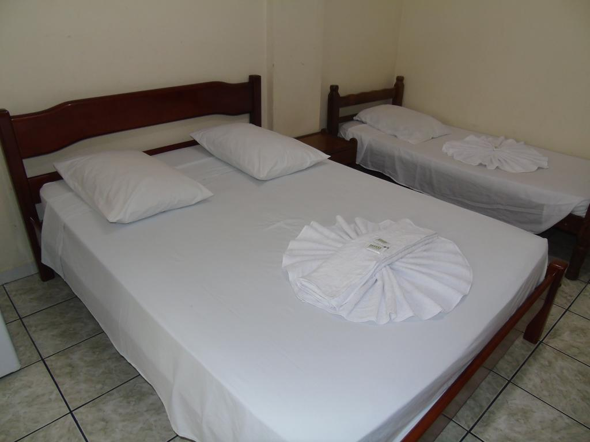
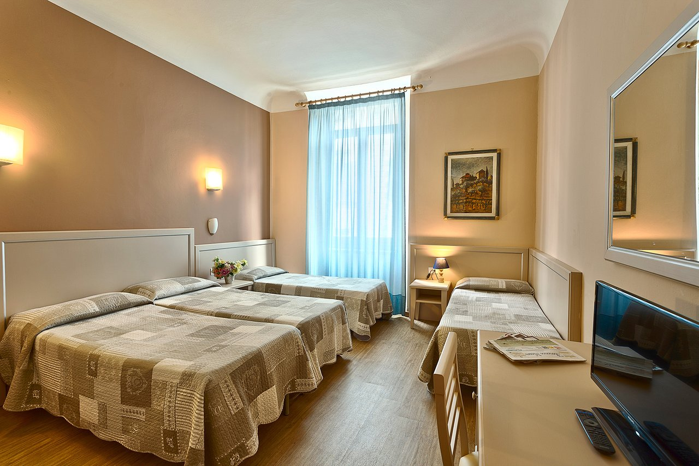
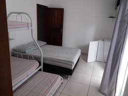
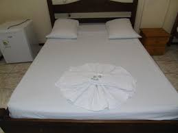

Fundado em 1980, o Novo Hotel Douglas busca ser uma opção simples e econômica, porem muito familiar e encantadora, no maior polo turístico do sul do Brasil. Nossos quartos possuem ar condicionado, frigobar e televisão. Disponibilizamos Wi-Fi gratuito, café da manhã e estacionamento incluídos na diária. O hotel está localizado na esquina da Av. do Estado com a rua 1021, próximo a Estação Rodoviária e do centro da cidade. Estamos à aproximadamente 250 metros da praia central e a 150 metros da Av. Brasil, com um comércio muito ativo e moderno. Estamos também a poucos quilômetros das praias agrestes do sul do município (Taquaras, Taquarinhas, Estaleiro, Estaleirinho, Pinho, etc.) e do vizinho município de Porto Belo, com as famosas praias de Bombas, Bombinhas, Mariscal, Zimbros, etc. Em direção ao norte, a Av. do Estado nos leva ao vizinho Município de Itajaí, distante uns 8 quilômetros, com seu importante porto e singulares belezas naturais. Além de desfrutar durante o dia das belezas naturais, você tem a disposição um vibrante comércio de rua e dois modernos shopping center com opções diferentes. A cidade é conhecida pelos seus bares e restaurantes, que agradam todos os paladares e se adaptam a todos os bolsos. Sem contar com a agitada vida noturna, com inúmeras opções. Temos também, na Barra Sul, o Parque Unipraias, belíssimo exemplo de oportunidades de turismo de aventura junto com o respeito ao meio ambiente, enfatizando a sustentabilidade das atividades. Finalmente, destacamos a proximidade com o Parque Beto Carreiro, o maior da América Latina, visitado por turistas de todo o mundo. Outro aspecto a ser destacado é o calendário de eventos, que vão desde encontros de motociclistas, feiras artesanais e comerciais, até congressos técnicos e científicos, garantindo uma movimentação em todas as épocas do ano.
Delicioso
Café da Manhã
Suíte Dupla
Suíte Tripla
Suíte Quadrupla
Suíte Individual

 CONTATO: 55(47) 3366-4217 - 55(47) 3367-3563 - E-mail: contato@novohoteldouglas.com.br
CONTATO: 55(47) 3366-4217 - 55(47) 3367-3563 - E-mail: contato@novohoteldouglas.com.br
Av. do Estado, 3125 - Centro - Balneario Camboriu - SC, 88330-077